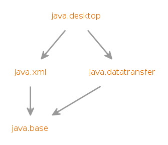

Module java.desktop
Defines the AWT and Swing user interface toolkits, plus APIs for
accessibility, audio, imaging, printing, and JavaBeans.
- Module Graph:
- 
- Since:
- 9
{kind=link}
-
-
Packages
Exports Package Description java.applet Provides the classes necessary to create an applet and the classes an applet uses to communicate with its applet context.java.awt Contains all of the classes for creating user interfaces and for painting graphics and images.java.awt.color Provides classes for color spaces.java.awt.desktop Provides interfaces and classes for interaction with various desktop capabilities.java.awt.dnd Drag and Drop is a direct manipulation gesture found in many Graphical User Interface systems that provides a mechanism to transfer information between two entities logically associated with presentation elements in the GUI.java.awt.event Provides interfaces and classes for dealing with different types of events fired by AWT components.java.awt.font Provides classes and interface relating to fonts.java.awt.geom Provides the Java 2D classes for defining and performing operations on objects related to two-dimensional geometry.java.awt.im Provides classes and interfaces for the input method framework.java.awt.im.spi Provides interfaces that enable the development of input methods that can be used with any Java runtime environment.java.awt.image Provides classes for creating and modifying images.java.awt.image.renderable Provides classes and interfaces for producing rendering-independent images.java.awt.print Provides classes and interfaces for a general printing API.java.beans Contains classes related to developing beans -- components based on the JavaBeans™ architecture.java.beans.beancontext Provides classes and interfaces relating to bean context.javax.accessibility Defines a contract between user-interface components and an assistive technology that provides access to those components.javax.imageio The main package of the Java Image I/O API.javax.imageio.event A package of the Java Image I/O API dealing with synchronous notification of events during the reading and writing of images.javax.imageio.metadata A package of the Java Image I/O API dealing with reading and writing metadata.javax.imageio.plugins.bmp Package containing the public classes used by the built-in BMP plug-in.javax.imageio.plugins.jpeg Classes supporting the built-in JPEG plug-in.javax.imageio.plugins.tiff Public classes used by the built-in TIFF plug-ins.javax.imageio.spi A package of the Java Image I/O API containing the plug-in interfaces for readers, writers, transcoders, and streams, and a runtime registry.javax.imageio.stream A package of the Java Image I/O API dealing with low-level I/O from files and streams.javax.print Provides the principal classes and interfaces for the Java™ Print Service API.javax.print.attribute Provides classes and interfaces that describe the types of Java™ Print Service attributes and how they can be collected into attribute sets.javax.print.attribute.standard Packagejavax.print.attribute.standardcontains classes for specific printing attributes.javax.print.event Packagejavax.print.eventcontains event classes and listener interfaces.javax.sound.midi Provides interfaces and classes for I/O, sequencing, and synthesis of MIDI (Musical Instrument Digital Interface) data.javax.sound.midi.spi Supplies interfaces for service providers to implement when offering new MIDI devices, MIDI file readers and writers, or sound bank readers.javax.sound.sampled Provides interfaces and classes for capture, processing, and playback of sampled audio data.javax.sound.sampled.spi Supplies abstract classes for service providers to subclass when offering new audio devices, sound file readers and writers, or audio format converters.javax.swing Provides a set of "lightweight" (all-Java language) components that, to the maximum degree possible, work the same on all platforms.javax.swing.border Provides classes and interface for drawing specialized borders around a Swing component.javax.swing.colorchooser Contains classes and interfaces used by theJColorChoosercomponent.javax.swing.event Provides for events fired by Swing components.javax.swing.filechooser Contains classes and interfaces used by theJFileChoosercomponent.javax.swing.plaf Provides one interface and many abstract classes that Swing uses to provide its pluggable look-and-feel capabilities.javax.swing.plaf.basic Provides user interface objects built according to the Basic look and feel.javax.swing.plaf.metal Provides user interface objects built according to the Java look and feel (once codenamed Metal), which is the default look and feel.javax.swing.plaf.multi Provides user interface objects that combine two or more look and feels.javax.swing.plaf.nimbus Provides user interface objects built according to the cross-platform Nimbus look and feel.javax.swing.plaf.synth Synth is a skinnable look and feel in which all painting is delegated.javax.swing.table Provides classes and interfaces for dealing withjavax.swing.JTable.javax.swing.text Provides classes and interfaces that deal with editable and noneditable text components.javax.swing.text.html Provides the classHTMLEditorKitand supporting classes for creating HTML text editors.javax.swing.text.html.parser Provides the default HTML parser, along with support classes.javax.swing.text.rtf Provides a class (RTFEditorKit) for creating Rich-Text-Format text editors.javax.swing.tree Provides classes and interfaces for dealing withjavax.swing.JTree.javax.swing.undo Allows developers to provide support for undo/redo in applications such as text editors.
-
Modules
Requires Modifier Module Description transitive java.datatransfer Defines the API for transferring data between and within applications.transitive java.xml Defines the Java API for XML Processing (JAXP), the Streaming API for XML (StAX), the Simple API for XML (SAX), and the W3C Document Object Model (DOM) API.
-
Services
Uses Type Description AccessibilityProvider Service Provider Interface (SPI) for Assistive Technology.AudioFileReader Provider for audio file reading services.AudioFileWriter Provider for audio file writing services.FormatConversionProvider A format conversion provider provides format conversion services from one or more input formats to one or more output formats.ImageInputStreamSpi The service provider interface (SPI) forImageInputStreams.ImageOutputStreamSpi The service provider interface (SPI) forImageOutputStreams.ImageReaderSpi The service provider interface (SPI) forImageReaders.ImageTranscoderSpi The service provider interface (SPI) forImageTranscoders.ImageWriterSpi The service provider interface (SPI) forImageWriters.InputMethodDescriptor Defines methods that provide sufficient information about an input method to enable selection and loading of that input method.MidiDeviceProvider AMidiDeviceProvideris a factory or provider for a particular type of MIDI device.MidiFileReader AMidiFileReadersupplies MIDI file-reading services.MidiFileWriter AMidiFileWritersupplies MIDI file-writing services.MixerProvider A provider or factory for a particular mixer type.PrintServiceLookup Implementations of this class provide lookup services for print services (typically equivalent to printers) of a particular type.SoundbankReader ASoundbankReadersupplies soundbank file-reading services.StreamPrintServiceFactory AStreamPrintServiceFactoryis the factory forStreamPrintServiceinstances, which can print to an output stream in a particular document format described as a mime type.
-